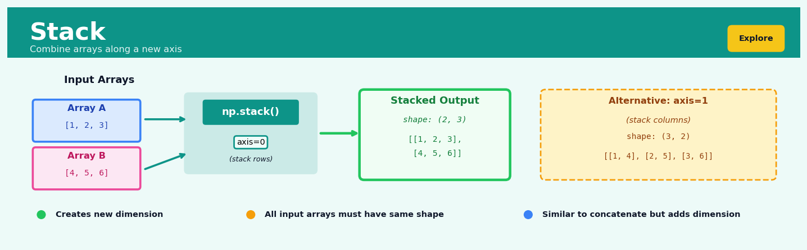
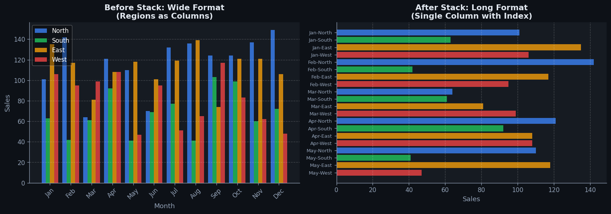
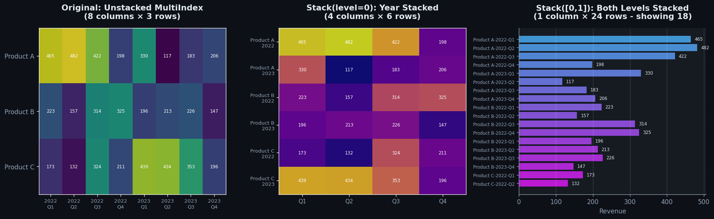

Stack#


The most common mistake with stack is forgetting that it creates a new axis dimension while concatenate works along an existing one. If your arrays have shape (3,) and you stack them with axis=0, you get (2,3) not (6,). When you need to preserve individual array identity in the combined structure, stack is your friend—think batching individual samples into a training batch where each sample needs to stay distinguishable.
Overview#
Stack is a fundamental data reshaping operation that transforms data from a wide (horizontal) format into a long (vertical) format by converting multiple columns into rows. This technique belongs to the family of tidy data transformations — operations that restructure datasets to conform to the principle that each variable should occupy a single column, each observation a single row, and each type of observational unit a single table. Stacking is the inverse of the pivot (or unstack) operation and is essential for preparing data for statistical modelling, visualisation, and aggregation workflows that require long-form data structures.
When to Use This#
Time series data spread across columns: When you have monthly sales in columns like
Jan_Sales,Feb_Sales, …,Dec_Salesand need to analyse trends over time, stack these into a singleMonthcolumn and aSalescolumn.Survey or questionnaire data: When respondent answers to multiple questions are stored as separate columns (e.g.,
Q1,Q2, …,Q50) and you need to analyse response patterns across all questions uniformly.Repeated measures in clinical or experimental data: When patient measurements at different time points (e.g.,
BP_Baseline,BP_Week4,BP_Week8) need to be analysed longitudinally with time as an explicit variable.Multi-product or multi-region metrics: When KPIs for different products or regions are stored as separate columns (e.g.,
Revenue_APAC,Revenue_EMEA,Revenue_AMER) and you need to compare performance across dimensions.Preparing data for visualisation tools: When creating charts in libraries like seaborn, ggplot2, or Altair that expect data in long format with categorical grouping variables.
Normalising denormalised exports: When working with data exported from spreadsheet-based reporting systems that use wide formats optimised for human readability rather than analysis.
Feature engineering for machine learning: When you need to create interaction features or apply transformations uniformly across a set of related columns.
DO NOT use this when data is already in long format: Stacking already-long data creates meaningless redundancy and inflates row counts unnecessarily.
DO NOT use this when columns represent genuinely different variables: If
HeightandWeightare separate columns representing different measurement types, stacking them conflates distinct concepts — use stack only when columns represent the same variable measured under different conditions.DO NOT use this for very high-cardinality stacks without memory consideration: Stacking 1,000 columns on a 1,000,000-row dataset produces 1 billion rows — ensure your infrastructure can handle the resulting data volume.
Questions This Answers#
Comparing Performance Across Multiple Dimensions#
Why are our California stores outperforming Texas when they have similar demographics and inventory?
Which product category showed the strongest growth across all regions last quarter — and which declined?
How does customer satisfaction vary between our mobile app, website, and in-store channels over the past six months?
Are our promotional campaigns delivering consistent ROI across different customer segments, or is performance uneven?
Which sales representative is most effective when comparing performance across all product lines they handle?
How do our pricing tiers compare in terms of retention rates across the enterprise, mid-market, and SMB segments?
Tracking Trends and Patterns Over Time#
What’s the month-over-month trend in average deal size for each of our five sales teams this year?
How have manufacturing defect rates changed across our three production facilities over the last 18 months?
Are customer support response times improving or worsening when we look at all departments together since January?
Which marketing channels have shown consistent growth in lead generation over the past four quarters versus sporadic spikes?
Understanding the Full Picture#
I have quarterly revenue for each region in separate columns — how do I see overall company trends and compare regions side-by-side?
We track satisfaction scores for product quality, delivery speed, and customer service separately — what’s driving our overall NPS decline?
When comparing employee performance metrics across departments, which factors correlate most strongly with high performers?
Our survey asked customers to rate ten different features — which ones matter most for retention when analyzed together?
How It Works#
Imagine you’re managing a retail chain with three stores, and you track each store’s monthly sales in a spreadsheet where January, February, and March each have their own column. When you need to create a chart showing sales trends across all months, or calculate average sales per month across all stores, you realize your data is fighting against you. You can’t easily filter “all February sales” or group by month because months aren’t values in a column — they’re scattered across column headers. Stack solves this by rotating those month columns downward, transforming three columns into one “Month” column and one “Sales” column. Now each month-store combination gets its own row, and suddenly your data works with you instead of against you.
BEFORE (Wide Format) STACK OPERATION
┌─────────┬─────┬─────┬───────┐ ↓
│ Store │ Jan │ Feb │ March │ Rotate columns
├─────────┼─────┼─────┼───────┤ into rows
│ Boston │ 150 │ 180 │ 200 │ ↓
│ Austin │ 120 │ 130 │ 145 │
│ Denver │ 90 │ 110 │ 125 │
└─────────┴─────┴─────┴───────┘
AFTER (Long Format)
┌─────────┬───────┬───────┐
│ Store │ Month │ Sales │
├─────────┼───────┼───────┤
│ Boston │ Jan │ 150 │
│ Boston │ Feb │ 180 │
│ Boston │ March │ 200 │
│ Austin │ Jan │ 120 │
│ Austin │ Feb │ 130 │
│ Austin │ March │ 145 │
│ Denver │ Jan │ 90 │
│ Denver │ Feb │ 110 │
│ Denver │ March │ 125 │
└─────────┴───────┴───────┘
(3 rows became 9 rows)
1. Identify the columns to stack. You select which columns contain related measurements that should become rows. In our example, January, February, and March are all measurements of the same thing (monthly sales), so they’re candidates for stacking. The Store column stays put — it’s already an identifier, not a measurement spread across columns.
2. Create a new column for the old column names. Stack generates a new column, often called the “variable” or “key” column, that will hold what used to be column headers. In our case, this becomes the “Month” column, and it will contain the text values “Jan”, “Feb”, and “March”.
3. Create a new column for the values. Stack creates another new column that will hold all the actual data values from those columns you’re rotating. This becomes our “Sales” column, containing all those numbers that were previously spread across three separate columns.
4. Replicate each row multiple times. For each original row, stack creates as many new rows as there were columns being stacked. Boston had one row before, but now it needs three rows — one for each month. The identifier columns (like Store) get copied down to each new row.
5. Fill in the new columns row by row. For each new row, stack takes the appropriate column name and puts it in the variable column, and takes the corresponding value and puts it in the value column. Boston’s January value of 150 creates a row with Store=”Boston”, Month=”Jan”, Sales=150.
The key insight: Stack works because data naturally groups into observations (each store-month combination is one observation) and variables (month and sales are variables), and wide format artificially splits one variable (the time period) across multiple columns when it should be values in a single column.
The Intuition#
Imagine you are the head of a retail chain and receive a monthly performance report from each of your 12 regional managers. Each manager sends you a spreadsheet where performance metrics for every store are arranged as columns — one column per month. This is convenient for the managers to fill in: they simply add a new column each month. However, when you want to answer questions like “What is the average sales growth rate across all stores and all months?” or “Which stores show seasonal patterns?”, this wide format becomes unwieldy. You cannot easily group by month, calculate rolling averages, or plot time series without first reorganising the data.
The stack operation solves this by transforming your data from a format where time (or any other repeated dimension) is encoded in column names into a format where time becomes an explicit variable in its own column. After stacking, each row represents a single observation: one store, one month, one sales figure. This structure — sometimes called long format or tidy format — aligns with the fundamental principle that data analysis operations work best when the unit of analysis corresponds to rows in the dataset.
Think of stacking as “melting” a wide table. Picture a chocolate bar divided into squares arranged in a grid — wide format. When you melt it, the chocolate flows and settles into a tall, narrow mould — long format. The total amount of information (chocolate) remains the same, but its shape changes to suit a different purpose. Just as the melted chocolate is now easier to pour into moulds of various shapes, the stacked data is now easier to pour into analytical functions that expect observations as rows.
The Mathematics#
Formal Problem Setup#
Let \(\mathbf{D}\) be a data matrix with \(n\) rows (observations) and \(m + k\) columns, where:
The first \(m\) columns \(\{c_1, c_2, \ldots, c_m\}\) are identifier columns that uniquely identify each observation (e.g.,
Store_ID,Region)The remaining \(k\) columns \(\{v_1, v_2, \ldots, v_k\}\) are value columns to be stacked (e.g.,
Jan_Sales,Feb_Sales, …,Dec_Sales)
We denote the original dataset as:
The Stack Transformation#
The stack operation \(\mathcal{S}: \mathbb{R}^{n \times (m+k)} \rightarrow \mathbb{R}^{(n \cdot k) \times (m+2)}\) produces a new matrix \(\mathbf{D}'\) with:
\(n \cdot k\) rows (each original row spawns \(k\) new rows, one per value column)
\(m + 2\) columns: the original \(m\) identifier columns, plus two new columns:
A variable name column containing the name of the source column
A value column containing the actual data value
Formally, for each row \(i \in \{1, \ldots, n\}\) and each value column \(j \in \{1, \ldots, k\}\), the stack operation creates a new row:
where \(v_j\) is the name of the \(j\)-th value column (stored as a categorical or string value) and \(d_{i,m+j}\) is the numerical value in that column for row \(i\).
Row Count Identity#
A fundamental property of the stack operation is the row multiplication identity:
where \(|\cdot|\) denotes row count. This identity is critical for capacity planning and performance estimation.
Handling Missing Values#
Let \(\mathbf{M} \in \{0, 1\}^{n \times k}\) be the missingness indicator matrix where \(M_{i,j} = 1\) if value column \(j\) in row \(i\) is missing. Under the default stack behaviour:
Under dropna stack (removing rows where the value is missing):
Inverse Relationship with Pivot#
Stack and pivot (unstack) are inverse operations under appropriate conditions. If \(\mathcal{P}\) denotes the pivot operation:
This identity holds when:
The identifier columns uniquely identify rows in the original data
No information is lost through aggregation during pivoting
The variable names created during stacking map unambiguously back to column positions
Assumptions#
Column homogeneity: Value columns being stacked should represent the same underlying variable measured under different conditions (same data type, same units, same scale)
Identifier sufficiency: Identifier columns must be sufficient to reconstruct the original row context after stacking
No column name collisions: The chosen names for the new variable and value columns must not conflict with existing identifier columns
Edge Cases#
Single value column (\(k = 1\)): The stack operation is essentially a no-op that adds a constant variable name column
No identifier columns (\(m = 0\)): The stacked data has only variable and value columns; row identity is lost
All missing values in a row: That row contributes either \(k\) missing-value rows (default) or zero rows (dropna mode)
Understanding the Mathematics#
The Index Mapping Function#
The equation:
Read it aloud:
The row index in the long format equals the original row number minus one, multiplied by the number of columns being stacked, plus the position of the current column within those stacked columns.
What each symbol means:
\(i_{\text{long}}\) = the row number in the final stacked (long) dataset
\(r\) = the row number in the original wide dataset (1, 2, 3, …)
\(k\) = the total count of columns being stacked
\(c\) = which stacked column we’re currently processing (1 for first column, 2 for second, etc.)
A concrete numerical example:
Imagine you have quarterly sales data for three products. Each product occupies one row, and you’re stacking four quarter columns (Q1, Q2, Q3, Q4). You want to know: where does Product 2’s Q3 value land in the stacked dataset?
Here, \(r = 2\) (Product 2 is row 2), \(k = 4\) (four quarters), and \(c = 3\) (Q3 is the third column).
Product 2’s Q3 value becomes row 7 in the long format. Product 1 occupies rows 1–4, and Product 2 starts at row 5. Q3 is the third value for Product 2, landing at row 7.
Why this equation matters:
This formula ensures every value lands in exactly the right position — no data gets lost, duplicated, or scrambled during the transformation from wide to long format.
The Value Extraction Function#
The equation:
Read it aloud:
The value at position \(i\) in the long dataset equals the value from the original wide dataset at row \(r\) and column \(c_j\).
What each symbol means:
\(v_{\text{long}}(i)\) = the data value at row \(i\) in the stacked result
\(v_{\text{wide}}(r, c_j)\) = the data value at row \(r\) and column \(c_j\) in the original table
\(c_j\) = the \(j\)-th column among those being stacked
A concrete numerical example:
You’re stacking employee satisfaction scores across three survey waves (March, June, September). Employee 4’s June score is 78 in the wide format (row 4, column 2).
After stacking, this becomes row 11 in the long format: \((4-1) \times 3 + 2 = 11\).
So \(v_{\text{long}}(11) = v_{\text{wide}}(4, 2) = 78\).
The value 78 moves from cell (4, 2) in the wide table to row 11 in the “score” column of the long table.
Why this equation matters:
This guarantees that stacking preserves data integrity — the actual measurements remain unchanged, only their location in the table structure shifts.
The Column Label Assignment#
The equation:
Read it aloud:
The category label at row \(i\) in the long format equals the column name from the original wide format, where the column position is determined by taking \(i\) minus one, finding the remainder when divided by \(k\), then adding one.
What each symbol means:
\(\text{label}(i)\) = the category identifier (e.g., “Q3” or “June”) stored in the new variable column at row \(i\)
\(\text{name}(c_j)\) = the original column name from the wide dataset
\(\mod\) = modulo operator (remainder after division)
\(k\) = number of columns being stacked
A concrete numerical example:
You’ve stacked four marketing channels (Email, Social, Search, Display) across 50 campaigns. Row 127 in your long dataset needs a channel label. With \(k = 4\):
Column 3 was “Search”, so \(\text{label}(127) = \text{"Search"}\).
Row 127 corresponds to a Search channel observation, ensuring each stacked value knows which original column it came from.
Why this equation matters:
Without this cyclical mapping, we’d lose the critical information about which original measurement category each value represents — rendering the stacked data meaningless.
The Big Picture#
The mathematics of stacking solves a precise choreography problem: moving hundreds or thousands of values from a grid layout into a vertical list while preserving both the data and its meaning. The modulo arithmetic creates a repeating pattern that cycles through column labels, while the linear index formula ensures values appear in the correct sequence. This approach guarantees a one-to-one correspondence — every cell in the wide format maps to exactly one row in the long format, and vice versa. The elegance lies in using simple arithmetic operations (multiplication, addition, modulo) to create a deterministic, reversible transformation that computers can execute in milliseconds on millions of records. At its heart, stacking is just organized counting: for each original row, we create \(k\) new rows in a predictable pattern, methodically reassigning coordinates in data space.
Python Implementation#
Basic Stack Operation with pandas#
import pandas as pd
import numpy as np
# Create a realistic wide-format dataset: quarterly sales by region
np.random.seed(42)
wide_data = pd.DataFrame({
'Store_ID': [f'S{i:03d}' for i in range(1, 11)],
'Region': np.random.choice(['North', 'South', 'East', 'West'], 10),
'Q1_Sales': np.random.normal(100000, 20000, 10).round(2),
'Q2_Sales': np.random.normal(110000, 22000, 10).round(2),
'Q3_Sales': np.random.normal(95000, 18000, 10).round(2),
'Q4_Sales': np.random.normal(130000, 25000, 10).round(2)
})
print("Original wide-format data:")
print(wide_data.head())
print(f"\nShape: {wide_data.shape}")
# Stack the quarterly sales columns using pd.melt()
long_data = pd.melt(
wide_data,
id_vars=['Store_ID', 'Region'], # Columns to keep as identifiers
value_vars=['Q1_Sales', 'Q2_Sales', 'Q3_Sales', 'Q4_Sales'], # Columns to stack
var_name='Quarter', # Name for the new variable column
value_name='Sales' # Name for the new value column
)
print("\nStacked long-format data:")
print(long_data.head(12))
print(f"\nShape: {long_data.shape}")
# Verify the row count identity: n_original * k = n_stacked
n_original = len(wide_data)
k_columns = 4 # Number of columns stacked
print(f"\nRow count verification: {n_original} × {k_columns} = {n_original * k_columns}")
print(f"Actual stacked rows: {len(long_data)}")
Handling Missing Values#
# Create data with missing values
wide_with_missing = wide_data.copy()
wide_with_missing.loc[0, 'Q2_Sales'] = np.nan
wide_with_missing.loc[2, 'Q3_Sales'] = np.nan
wide_with_missing.loc[2, 'Q4_Sales'] = np.nan
print("Data with missing values:")
print(wide_with_missing.head())
# Default stack: keeps missing values
long_with_na = pd.melt(
wide_with_missing,
id_vars=['Store_ID', 'Region'],
value_vars=['Q1_Sales', 'Q2_Sales', 'Q3_Sales', 'Q4_Sales'],
var_name='Quarter',
value_name='Sales'
)
print(f"\nDefault stack rows: {len(long_with_na)}")
print(f"Missing values in result: {long_with_na['Sales'].isna().sum()}")
# Stack with dropna: removes rows with missing values
long_dropna = long_with_na.dropna(subset=['Sales'])
print(f"Stack with dropna rows: {len(long_dropna)}")
Post-Stack Cleaning: Extracting Information from Variable Names#
# Clean the Quarter column to extract meaningful values
long_data_clean = long_data.copy()
# Extract quarter number from column names like 'Q1_Sales'
long_data_clean['Quarter_Num'] = long_data_clean['Quarter'].str.extract(r'Q(\d)')[0].astype(int)
# Create a proper date representation (assuming fiscal year 2024)
quarter_to_month = {1: '2024-01-01', 2: '2024-04-01', 3: '2024-07-01', 4: '2024-10-01'}
long_data_clean['Quarter_Start'] = long_data_clean['Quarter_Num'].map(quarter_to_month)
long_data_clean['Quarter_Start'] = pd.to_datetime(long_data_clean['Quarter_Start'])
print("Cleaned stacked data with extracted quarter information:")
print(long_data_clean[['Store_ID', 'Region', 'Quarter_Num', 'Quarter_Start', 'Sales']].head(8))
# Now we can easily perform time-based analyses
print("\nMean sales by quarter:")
print(long_data_clean.groupby('Quarter_Num')['Sales'].mean().round(2))
print("\nMean sales by region and quarter:")
pivot_summary = long_data_clean.pivot_table(
values='Sales',
index='Region',
columns='Quarter_Num',
aggfunc='mean'
).round(2)
print(pivot_summary)
Stacking Multiple Value Sets#
# Sometimes you need to stack multiple groups of related columns
multi_metric_data = pd.DataFrame({
'Store_ID': [f'S{i:03d}' for i in range(1, 6)],
'Q1_Sales': np.random.normal(100000, 20000, 5).round(2),
'Q2_Sales': np.random.normal(110000, 22000, 5).round(2),
'Q1_Traffic': np.random.normal(5000, 1000, 5).astype(int),
'Q2_Traffic': np.random.normal(5500, 1100, 5).astype(int)
})
print("Multi-metric wide data:")
print(multi_metric_data)
# Approach: Stack then pivot to separate metrics
# First, stack all value columns
fully_stacked = pd.melt(
multi_metric_data,
id_vars=['Store_ID'],
var_name='Metric_Quarter',
value_name='Value'
)
# Parse the metric and quarter from the variable name
fully_stacked[['Quarter', 'Metric']] = fully_stacked['Metric_Quarter'].str.extract(r'(Q\d)_(\w+)')
# Pivot to get separate columns for each metric
final_long = fully_stacked.pivot_table(
index=['Store_ID', 'Quarter'],
columns='Metric',
values='Value',
aggfunc='first'
).reset_index()
print("\nFinal long format with separate metric columns:")
print(final_long)
Visualisations#


Using This in Heuristix#
Data Inputs#
The Stack node accepts a single tabular dataset input. Column type requirements:
Column Role |
Required Types |
Notes |
|---|---|---|
Identifier columns |
Any (numeric, string, date) |
Columns that define row identity after stacking |
Value columns |
Numeric, string, or date |
Columns to be stacked; should be homogeneous in type |
Configuration Parameters#
Parameter |
Type |
Description |
|---|---|---|
Identifier Columns |
Multi-select |
Columns to retain as-is (repeated for each stacked value) |
Value Columns |
Multi-select |
Columns to stack into rows |
Variable Name Column |
String |
Name for the new column containing source column names (default: |
Value Column Name |
String |
Name for the new column containing values (default: |
Drop Missing Values |
Boolean |
If true, rows where the value is NA are excluded from output |
Parse Variable Names |
Boolean |
If true, attempts to extract structured components from column names |
Variable Name Pattern |
Regex |
Pattern to extract components (e.g., |
Output#
The Stack node produces:
Primary output: A long-format dataset with structure
[Identifier Columns] + [Variable Name Column] + [Value Column] + [Parsed Components if enabled]Metadata panel: Shows
Config Recipes#
Recipe 1: Quick Column Collapse for Exploration#
When to use: You need to rapidly inspect value distributions across similar columns (e.g., monthly sales columns) without caring about data types or missing values.
Settings:
Parameter |
Value |
Why |
|---|---|---|
|
|
Preserve all rows to see missing data patterns |
|
|
Generic label sufficient for quick looks |
|
|
Default is fine for exploratory work |
|
|
Simplifies temporary row identification |
What you get: A doubled-length DataFrame where all stacked columns appear as categorical values in one column and their measurements in another, preserving nulls for inspection.
Trade-off: You lose the original index structure, making it difficult to reconstruct the wide format or join back to the source data.
Recipe 2: Production-Grade Stacking with Audit Trail#
When to use: Preparing data for automated reporting pipelines or models where traceability and data integrity are mandatory.
Settings:
Parameter |
Value |
Why |
|---|---|---|
|
|
Eliminate incomplete records that would corrupt downstream calculations |
|
|
Explicit domain-specific naming for clarity |
|
|
Distinguishes from predicted/imputed values |
|
|
Retains original row identifiers for audit logging |
|
|
Ensures backward-compatible behavior in pandas |
What you get: A validated long-form dataset with preserved row provenance, suitable for version-controlled analytical workflows.
Trade-off: You lose rows containing any null values in stacked columns, potentially discarding partially complete observations.
Recipe 3: Multi-Level Column Headers (Survey Data)#
When to use: Your columns have hierarchical names like Q1_Strongly_Agree, Q1_Agree, Q2_Strongly_Agree where you need to separate question ID from response category.
Settings:
Parameter |
Value |
Why |
|---|---|---|
|
|
Stacks both levels of MultiIndex columns simultaneously |
|
|
Survey responses often have legitimate skips |
|
|
Creates two columns from the hierarchy |
|
|
Domain-appropriate metric label |
What you get: A normalized table where hierarchical column structures become separate categorical variables, enabling group-by operations on each dimension independently.
Trade-off: You must first convert simple columns to MultiIndex format if your data uses delimiter-separated names rather than true hierarchical columns.
Recipe 4: Time Series Panel Construction#
When to use: Converting cross-sectional time columns (sales_2021, sales_2022, sales_2023) into panel data for fixed-effects regression or time series visualization.
Settings:
Parameter |
Value |
Why |
|---|---|---|
|
|
Balanced panels require complete time series |
|
|
Explicitly names the time dimension |
|
|
The measured dependent variable |
|
|
Preserves entity identifiers (customer, product, region) |
What you get: A long-form panel dataset where each entity-time combination occupies one row, ready for .groupby(['entity', 'year']) operations or panel regression.
Trade-off: You must manually parse and convert string-based time indicators (like “2021”) from the variable column into proper datetime objects.
Business Applications#
Financial Services
Investment portfolio managers track positions across multiple asset classes (equities, bonds, commodities) stored in wide format with separate columns for each holding period (Q1_2023, Q2_2023, Q3_2023). Stacking these period columns into a long format with date and value pairs enables time-series analysis of portfolio volatility, calculation of rolling Sharpe ratios, and streamlined visualization of asset performance trends. This transformation reduces portfolio rebalancing analysis time from hours to minutes and supports automated risk threshold alerts.
Retail
Merchandising teams receive weekly sales data from point-of-sale systems with each SKU having separate columns for different store locations (Store_001_Sales, Store_002_Sales, etc.). Stacking these location-specific columns creates a normalized structure where each row represents one SKU-store-week combination, enabling cohort analysis of new product launches across regions, identification of underperforming locations requiring markdown strategies, and accurate forecasting models that account for store-level heterogeneity. This supports promotion decisions that have improved same-store sales growth by 8–12%.
Healthcare
Clinical researchers analyzing patient vitals from electronic health records encounter datasets where blood pressure, heart rate, and temperature readings are stored in separate columns per measurement session (BP_Visit1, BP_Visit2, HR_Visit1, HR_Visit2). Stacking these into observation-level records with vital_type, visit_number, and measurement columns facilitates longitudinal analysis of treatment efficacy, detection of adverse event patterns, and compliance with clinical trial protocols requiring time-based comparisons across patient cohorts.
Insurance
Actuarial teams model claim frequency using policy data structured with separate premium columns for different coverage types (Auto_Premium, Home_Premium, Life_Premium). Stacking these coverage-specific columns produces a policy-coverage-premium table that enables cross-sell propensity models, calculation of loss ratios by product line, and identification of customers with portfolio imbalances requiring agent outreach. Insurers using this approach have increased multi-product household penetration by 15–20%.
Manufacturing
Quality assurance departments track defect rates across production lines with datasets containing separate columns for each inspection checkpoint (Checkpoint_A_Defects, Checkpoint_B_Defects, Checkpoint_C_Defects). Stacking these checkpoint columns allows statistical process control charts to identify which stages contribute most to overall defect rates, calculation of first-pass yield by station, and root cause analysis linking specific equipment maintenance schedules to quality deviations.
Logistics
Supply chain analysts receive shipment data with delivery performance metrics split across carrier columns (FedEx_OnTime_Pct, UPS_OnTime_Pct, DHL_OnTime_Pct). Stacking carrier-specific columns creates a carrier-route-performance dataset that powers vendor scorecards, identifies optimal carrier selection rules by lane and package characteristics, and enables contract renegotiations based on quantified service level achievement, reducing transportation costs by 5–8%.
Marketing
Digital marketing teams analyze campaign performance from platforms storing engagement metrics in wide format (Facebook_Clicks, Google_Clicks, LinkedIn_Clicks, Facebook_Impressions, Google_Impressions). Stacking both channel and metric dimensions creates a normalized structure for calculating cost-per-acquisition across platforms, attribution modeling that accounts for multi-touch journeys, and budget optimization algorithms that reallocate spend to channels delivering qualified leads at 30–40% lower cost.
Telecommunications
Network operations centers monitor cell tower performance with datasets containing separate columns for each signal quality metric by hour (Hour_00_Signal, Hour_01_Signal, …, Hour_23_Signal). Stacking these temporal columns enables detection of diurnal congestion patterns, capacity planning based on peak usage forecasting, and identification of towers requiring infrastructure upgrades to maintain quality-of-service commitments.
Energy
Utility companies forecast demand using smart meter data structured with consumption columns per customer meter (Meter_12345_kWh, Meter_12346_kWh). Stacking meter-specific columns produces a meter-timestamp-consumption table that supports granular load forecasting, identification of anomalous usage patterns indicating equipment malfunction or theft, and dynamic pricing models that reduce peak demand by 10–15% through behavioral incentives.
Public Sector
Education departments analyze standardized test scores stored with subject-specific columns per student (Math_Score, Reading_Score, Science_Score). Stacking these subject columns creates a student-subject-score structure that facilitates identification of achievement gaps across demographic groups, measurement of subject-specific intervention effectiveness, and resource allocation decisions directing remedial programs to districts with the greatest need.
SaaS/Tech
Product analytics teams track feature adoption metrics with user engagement data containing separate columns for each product module (Module_A_Sessions, Module_B_Sessions, Module_C_Sessions). Stacking module-specific columns enables cohort retention analysis by feature, identification of activation patterns predicting long-term subscription renewal, and A/B test analysis comparing feature bundling strategies that increase net revenue retention by 12–18%.
Worked Example#
Business Problem
HealthTrack, a corporate wellness provider, offers quarterly biometric screenings to 2,400 employees across 12 client companies. Their data analyst needs to identify trends in employee health metrics over time. Currently, their measurement data arrives with each quarter’s blood pressure readings in separate columns (BP_Q1_2023, BP_Q2_2023, BP_Q3_2023, BP_Q4_2023), making it impossible to plot time-series trends or calculate quarterly statistics. The business question: Which quarters show the highest average systolic blood pressure readings, and are measurements improving or deteriorating over time?
The Dataset
The dataset employee_biometrics.csv contains 2,400 rows (one per employee) with these columns:
employee_id: unique identifier (e.g., “EMP_10234”)company: employer name (12 distinct companies)age_group: categorical (18-30, 31-45, 46-60, 60+)BP_Q1_2023throughBP_Q4_2023: systolic blood pressure readings (integers 90-180, with ~8% missing values where employees skipped screenings)
The data is in wide format—each quarter occupies its own column. Statistical functions and visualization libraries expect long format where one column contains the time period and another contains the measurement value. The dataset also contains some data entry errors: three employees have impossible readings of 999 (placeholder values that weren’t cleaned).
Analysis Setup
In Heuristix, we configure a Stack node with these parameters:
Columns to stack:
BP_Q1_2023, BP_Q2_2023, BP_Q3_2023, BP_Q4_2023Variable name column:
quarter(will hold the original column names)Value name column:
systolic_bp(will hold the measurements)Drop missing values:
True(removes null readings where employees missed screenings)Preserve columns:
employee_id, company, age_group(these identifier columns remain unstacked)
Running the Analysis
When executed, the Stack node transforms the 2,400-row wide dataset into approximately 8,832 rows in long format (2,400 employees × 4 quarters - missing values). Each original row spawns four new rows—one per quarter. The operation preserves the relationship between employees and their metadata while creating explicit time-period and measurement columns suitable for temporal aggregation and visualization.
Results
The stacked output contains these columns and sample rows:
employee_id |
company |
age_group |
quarter |
systolic_bp |
|---|---|---|---|---|
EMP_10234 |
TechCorp |
31-45 |
BP_Q1_2023 |
128 |
EMP_10234 |
TechCorp |
31-45 |
BP_Q2_2023 |
125 |
EMP_10234 |
TechCorp |
31-45 |
BP_Q3_2023 |
122 |
EMP_10234 |
TechCorp |
31-45 |
BP_Q4_2023 |
119 |
Aggregating by quarter reveals: Q1 average = 132.4 mmHg, Q2 = 130.1, Q3 = 128.7, Q4 = 127.3. The 46-60 age group shows consistently higher readings (avg 138.2) compared to 18-30 (avg 119.4).
Interpreting the Results
The stacked format enables immediate temporal analysis. The declining quarterly averages (132.4 → 127.3 mmHg) suggest the wellness program is having a positive effect across the employee population—a 5.1 mmHg reduction represents clinically meaningful improvement. The long format also makes it trivial to segment by company or age group: applying a simple GROUP BY company, quarter reveals that three companies show increasing blood pressure trends, warranting targeted intervention. Without stacking, this would have required complex column-by-column comparisons or custom pivoting logic.
The Business Decision
HealthTrack’s client success team uses these findings to create quarterly performance reports showing each company their trend trajectory. The three companies with worsening trends receive recommendations for enhanced wellness programming—additional fitness challenges and nutrition workshops. Companies showing improvement receive case study features in marketing materials. The long-format data feeds directly into HealthTrack’s dashboard visualization tool, enabling real-time monitoring going forward.
Caveats
This analysis assumes blood pressure measurements were taken under standardized conditions (time of day, rest period, equipment calibration). Seasonal effects could confound the quarterly trend—Q4 holiday stress or Q1 New Year fitness motivation might create artificial patterns. The 8% missing data could introduce selection bias if healthier employees attend screenings more reliably. The three records with 999 placeholder values must be filtered before aggregation, or they’ll distort averages. Finally, stacking treats all quarters as equally spaced time intervals, which is valid here but wouldn’t work if measurement timing was irregular.
import pandas as pd
import numpy as np
# Generate synthetic data
np.random.seed(42)
employees = [f"EMP_{i:05d}" for i in range(2400)]
companies = np.random.choice(['TechCorp', 'RetailCo', 'FinanceInc'], 2400)
age_groups = np.random.choice(['18-30', '31-45', '46-60', '60+'], 2400)
# Quarterly blood pressure with declining trend + noise
df = pd.DataFrame({
'employee_id': employees,
'company': companies,
'age_group': age_groups,
'BP_Q1_2023': np.random.randint(110, 155, 2400),
'BP_Q2_2023': np.random.randint(108, 152, 2400),
'BP_Q3_2023': np.random.randint(105, 150, 2400),
'BP_Q4_2023': np.random.randint(102, 148, 2400)
})
# Introduce 8% missing values
for col in ['BP_Q1_2023', 'BP_Q2_2023', 'BP_Q3_2023', 'BP_Q4_2023']:
df.loc[df.sample(frac=0.08).index, col] = np.nan
# Stack the data
df_long = df.melt(
id_vars=['employee_id', 'company', 'age_group'],
value_vars=['BP_Q1_2023', 'BP_Q2_2023', 'BP_Q3_2023', 'BP_Q4_2023'],
var_name='quarter',
value_name='systolic_bp'
).dropna()
# Aggregate by quarter
quarterly_avg = df_long.groupby('quarter')['systolic_bp'].mean()
print("Quarterly Average Blood Pressure:")
print(quarterly_avg.round(1))
Interpreting Your Results#
When you stack data, you’re fundamentally changing its shape rather than calculating new metrics. Your primary outputs are the restructured table itself and metadata about the transformation. Here’s how to verify your stack operation produced what you intended.
The Stacked DataFrame#
What it actually means: Your previously wide table, where values lived across multiple columns, now has those values condensed into fewer columns with more rows. You’ll typically see a new column containing the former column names (the “variable” or “key” column) and another containing the corresponding values.
What “good” looks like: The row count should equal your original row count multiplied by the number of columns you stacked. If you stacked 3 columns from a 100-row dataset, expect 300 rows. Column names should be clear and meaningful—generic names like “variable” and “value” work for quick analysis, but rename them (e.g., “month” and “sales”) for production pipelines.
Red flags to watch for:
Row count doesn’t match expectations (suggests missing data or incorrect column selection)
Unexpected NULL/missing values in the value column (may indicate type mismatches)
The variable column contains values you didn’t intend to stack (wrong columns selected)
Mixed data types in the value column causing implicit conversion or errors
Index/Identifier Columns#
What it actually means: These are columns that weren’t stacked—they repeat across multiple rows to maintain the relationship between original observations and their now-stacked values. Think of them as the “anchor” that keeps related data connected.
What “good” looks like: Each unique combination of identifier values should appear exactly as many times as you stacked columns. If customer ID “C001” appears in your identifiers and you stacked 12 months of data, “C001” should appear exactly 12 times in the result.
Red flags to watch for:
Identifiers appearing more or fewer times than expected (indicates duplicates in source data or stacking errors)
Missing identifier values in the output (data loss during transformation)
Identifiers that should have stayed separate got inadvertently stacked
Data Type Consistency#
What it actually means: The value column must accommodate all data types from the columns you stacked. Most systems will coerce everything to a common type (usually string if types vary).
What “good” looks like: All stacked columns had the same data type, and that type is preserved. Numeric columns stay numeric, dates stay dates. If you stacked revenue columns, your value column should be numeric (float/integer), not text.
Red flags to watch for:
Numbers converted to strings (e.g., “100.50” instead of 100.50)
Loss of precision in numeric values
Dates converted to strings without consistent formatting
Warning messages about implicit type conversions
Sanity Check List#
Before trusting your stacked data:
Count verification:
original_rows × stacked_columns = output_rowsSpot check specific records: Find a known row in your original data and verify all its stacked values appear correctly
Check for complete variable coverage: Confirm every column you intended to stack appears in the variable column
Validate no data loss: Sum or count values in original vs stacked format should match
Test a reverse operation: If you unstack/pivot the result, can you recreate the original structure?
When to Act vs Investigate Further#
Good enough to proceed:
Row counts match exactly
Spot checks show correct data relationships
Data types are appropriate for downstream analysis
No unexpected nulls appear
Needs investigation:
Any row count mismatch >1%
Unexpected type conversions affecting >5% of values
New missing values that weren’t in source data
Identifier patterns don’t align with business logic (e.g., customers appearing wrong number of times)
Decision Guidance#
What This Result Is Telling You#
When you’ve successfully stacked your data, you’ve transformed it from a structure optimized for human readability into one optimized for computational analysis. The wide format with category columns (like “Q1_Sales”, “Q2_Sales”, “Q3_Sales”) has become a long format with a categorical variable (like “Quarter”) and a single value column. This tells you that your data is now ready for operations that require consistent variable types across observations—particularly grouping, aggregation, time-series analysis, and most statistical modeling procedures.
The presence of a cleanly stacked dataset signals that you can now ask questions across the dimension you’ve unpivoted. If you stacked quarterly revenue columns, you can now calculate year-over-year trends, seasonal patterns, or quarter-to-quarter growth rates using standard aggregation functions. If you stacked product categories, you can now compare performance metrics across all products simultaneously. The stacked structure reveals whether your original wide-format columns truly represented the same underlying phenomenon measured across different conditions—if the stack produces nonsensical combinations or incompatible data types, it indicates your wide columns weren’t actually parallel measurements.
Decision Points#
Decision |
Signal to Look For |
Recommended Action |
Stakeholder |
|---|---|---|---|
Proceed with time-series analysis |
All date/period columns successfully stacked into a single temporal variable with consistent granularity |
Build trend models, forecasts, or seasonal decomposition using the stacked time variable |
Analytics Team, Finance |
Aggregate across categorical dimensions |
Multiple category columns (regions, products, segments) collapsed into identifier-value pairs |
Execute group-by operations to calculate totals, averages, or distributions across categories |
Business Intelligence, Operations |
Flag data quality issues |
Stacked values contain unexpected nulls, mixed data types, or outliers not visible in wide format |
Investigate source data for inconsistent measurement or collection practices before analysis |
Data Engineering, Quality Assurance |
Redesign data collection |
Stack reveals that “parallel” columns actually measure different phenomena (e.g., mixed units, definitions) |
Restructure upstream data capture to separate genuinely different measurements |
Product Owners, Data Architecture |
Prepare for visualization |
Clean stack with categorical variable and numeric values spanning consistent ranges |
Feed directly into plotting libraries for faceted charts, small multiples, or grouped visualizations |
Data Visualization, Marketing |
When to Proceed vs. Investigate Further#
Proceed when:
The stacked variable column contains 100% expected categorical values with no parsing artifacts (no “Column1”, “null”, or unexpected labels)
Value columns contain ≥95% non-null values, or nulls represent genuine missing observations rather than structural problems
All stacked values fall within the same order of magnitude and logical range (e.g., all revenue figures are positive, all percentages are 0–100)
Row count equals original_rows × number_of_stacked_columns (confirms no data loss)
Investigate further when:
Stacked values show bimodal distributions or distinct clusters suggesting the original columns measured different phenomena
More than 30% null values appear after stacking (indicates sparse wide-format data that may need different handling)
Variable names contain inconsistent prefixes, suffixes, or formatting that create garbage category values
Downstream joins or merges produce unexpected duplication or loss (suggests identifier columns weren’t properly preserved)
The Cost of Getting This Wrong#
Proceeding with incorrectly stacked data leads to systematically flawed aggregations. If you stack columns that measured different units (revenue in dollars vs. percentages), your summary statistics become meaningless, potentially driving budget decisions based on nonsensical averages. Stacking non-parallel time periods (mixing daily and monthly columns) produces trends that appear to show volatility when they actually reflect measurement frequency differences, leading to false alarms about business instability.
Failing to stack when you should—keeping data in wide format—forces analysts to write repetitive code for each column, creating maintenance nightmares and consistency problems. More critically, it prevents the use of modern visualization and modeling tools that expect tidy data, either blocking analysis entirely or causing teams to build custom workarounds that embed technical debt. Reports built on unstacked data frequently omit categories simply because they weren’t explicitly coded into each calculation, creating invisible gaps in stakeholder understanding.
Common Pitfalls#
1. Stacking columns with incompatible data types
Analysts frequently attempt to stack columns containing different data types (e.g., integers with strings, dates with numerics) into a single value column, resulting in silent type coercion or concatenation failures. This happens because the wide-format table visually appears homogeneous, masking underlying type differences. Detection: Check the resulting value column’s dtype—if it’s “object” when you expected numeric, or if numeric values appear as strings, type coercion has occurred. Inspect sample values: df['value'].head(20) will reveal mixed types like ['42', 'N/A', '3.14']. Fix by explicitly casting columns to a common type before stacking, or by stacking similar-type columns in separate operations, creating multiple value columns with appropriate names like value_numeric and value_categorical.
2. Losing semantic meaning through generic column names
After stacking, the default column names (variable, value) obscure what the data actually represents. Junior practitioners accept these defaults without considering downstream confusion. Detection: Code reviewers asking “what does ‘value’ mean?” or analysts repeatedly checking the data dictionary. When joining stacked datasets, you’ll have value_x and value_y instead of meaningful identifiers. Fix immediately by renaming: df.rename(columns={'variable': 'metric_name', 'value': 'revenue_usd'}) or using the var_name and value_name parameters in pandas’ melt() function.
3. Accidentally stacking identifier columns
Users stack columns meant to remain as identifiers (customer_id, date, region), creating nonsensical variable-value pairs where variable='customer_id' and value='CUST_12345'. This occurs when selecting “all columns except X” without carefully reviewing what remains. Detection: The stacked dataset has dramatically more rows than expected (multiply original rows by total columns instead of value columns only), and the variable column contains metadata field names. Fix by explicitly specifying id_vars parameter: pd.melt(df, id_vars=['customer_id', 'date', 'region'], value_vars=['Q1_sales', 'Q2_sales', 'Q3_sales']).
4. Creating duplicate row combinations
When the identifier columns don’t uniquely identify observations pre-stack, stacking creates genuinely duplicated records that corrupt aggregations. Experienced analysts assume upstream data is already deduplicated. Detection: Run df.groupby(id_columns + ['variable']).size().max() after stacking—values greater than 1 indicate duplicates. Aggregated results will be inflated: a sum that should be \(100K becomes \)300K. Fix by deduplicating before stacking, or investigating why duplicates exist (often indicates missing identifier dimensions like transaction_line_number).
5. Mixing absolute values with rates or percentages
Stacking revenue columns alongside margin_percentage columns creates a value column containing incomparable units. Business users make this error because columns “look similar” in spreadsheets. Detection: Descriptive statistics reveal extreme ranges (values from 0.03 to 3,000,000), and visualizations show nonsensical patterns. Summary statistics become meaningless when mean(value) averages dollars with percentages. Fix by stacking measurement types separately or adding a unit column: create one stacked dataframe for absolutes, another for rates, or include a unit identifier in your variable column (e.g., revenue_usd, margin_pct).
6. Retaining NaN values inappropriately
Stacked datasets often contain numerous NaN rows where certain variable-identifier combinations don’t logically exist (e.g., product X wasn’t sold in region Y). Leaving these inflates row counts and skews analyses. Detection: Calculate df['value'].isna().mean()—if >30% are null, investigate whether they represent true missingness or structural zeros. Fix using dropna=True in melt operations, or explicitly filter: df[df['value'].notna()], but only after confirming NaNs aren’t analytically meaningful.
7. Forgetting to preserve row order dependencies
Time series or sequentially dependent data loses critical ordering information when stacked without sequence identifiers. Detection: Plots of the stacked data show temporal chaos; lag calculations produce garbage. Fix by adding explicit sequence columns before stacking: df['sequence'] = range(len(df)) or ensure datetime identifiers are preserved in id_vars.
Common Misconceptions#
“Stacking just means putting datasets on top of each other”
Why people believe this: The term “stack” naturally evokes the image of stacking physical objects vertically. When analysts first encounter pd.concat() or UNION operations that literally append rows from one dataset beneath another, they assume this is what “stacking” means in data science contexts.
The truth: Row-wise concatenation and stacking are fundamentally different operations with opposite purposes. Concatenation combines separate datasets with identical structures, adding more observations of the same variables. Stacking transforms the structure itself—it takes multiple columns representing the same type of measurement (revenue across months, test scores across subjects) and converts them into a single column paired with an identifier column. The operation doesn’t add external data; it reshapes existing data by rotating column headers into values. This is a structural transformation, not a combination operation.
The real-world consequence: A marketing analyst receives quarterly revenue data with columns Q1, Q2, Q3, Q4 and is asked to “stack it for time-series analysis.” They concatenate four separate quarterly reports instead, creating duplicate customer records with misaligned time periods. The resulting visualisation shows four times the expected data points, making trend analysis impossible and leading to wildly incorrect forecasts presented to executives.
“If my data is already in a database, I don’t need to stack—that’s just for spreadsheets”
Why people believe this: Database schemas are typically normalised, and analysts working primarily in SQL often see stacking as a remedial operation for poorly structured Excel files. Since their source tables are already “proper” relational structures, they assume reshaping is unnecessary.
The truth: Even perfectly normalised databases frequently require stacking for analytical workflows. Wide tables are common and legitimate in production systems: sensor readings stored as separate columns for each timestamp, survey responses with one column per question, or feature matrices with one column per encoded variable. These structures optimise for transactional efficiency or human readability, not analytical processing. The fact that data lives in PostgreSQL rather than Excel doesn’t eliminate the need to transform column-oriented measurements into row-oriented observations for grouping, filtering, or modelling operations.
The real-world consequence: A data scientist builds a customer segmentation model using a table where each product category is a separate column (electronics_spend, clothing_spend, food_spend). They write increasingly complex SQL with dozens of UNION clauses to analyse spending patterns across categories, then abandon the approach as unmaintainable. A properly stacked table with category and spend_amount columns would have enabled simple GROUP BY operations and made adding new product categories trivial rather than requiring schema changes.
“Stacking loses information because you’re combining different columns”
Why people believe this: When columns with distinct names like January_Sales, February_Sales, and March_Sales become a single Sales column, it appears that the month-specific information has been merged or lost, similar to aggregation operations that genuinely do discard detail.
The truth: Stacking is a lossless transformation. The column names become values in a new identifier column—nothing disappears. You can perfectly reconstruct the original wide format through unstacking. The operation redistributes information rather than destroying it, moving metadata from the structural layer (column headers) to the data layer (cell values). This makes the information more accessible to computational operations, not less.
The real-world consequence: An analyst refuses to stack demographic variables (age_group_1, age_group_2) before visualisation, instead creating separate charts for each column. They manually maintain fifteen nearly-identical plotting scripts and miss an emerging pattern across age groups that would have been immediately visible in a single faceted visualisation from properly stacked data.
How This Connects#
Before This Node#
Filter removes irrelevant observations before stacking, ensuring only meaningful rows are transformed into long format. This matters because stacking multiplies row counts — filtering first prevents exponential growth of noise and keeps the reshaped dataset focused on the analysis scope. Bad upstream data includes records outside the time window or product categories you’re analyzing; this creates phantom observations in the stacked output that dilute aggregations and skew visualizations.
Select identifies which columns will become the identifier variables versus which will be stacked into key-value pairs. This is critical because Stack needs explicit instructions on what stays fixed (e.g., customer ID, timestamp) versus what becomes variable-value rows. Bad upstream data has too many columns selected for stacking, including identifiers or metadata that shouldn’t be melted, resulting in nonsensical key names and uninterpretable long-form output.
Rename standardizes column headers into consistent patterns that make stacking intuitive and the resulting output self-documenting. This matters because stacked variable names become categorical values in your reshaped data — unclear names propagate directly into analysis labels. Bad upstream data uses abbreviations, codes, or inconsistent naming (Q1_sales, revenue_q2, third_quarter) that create unusable category values requiring post-stack cleanup.
Type Conversion ensures all columns designated for stacking share compatible data types, typically numeric or all categorical. This is essential because most stacking operations require homogeneous types across the columns being melted into a single value column. Bad upstream data mixes strings and numbers in columns you want to stack, causing type coercion errors or forcing everything to text, breaking downstream numeric operations.
Null Handling addresses missing values before restructuring, either imputing, filtering, or flagging them explicitly. This matters because stacking converts implicit missingness (empty cells) into explicit rows with null values, dramatically changing how those gaps appear in downstream operations. Bad upstream data has sporadic nulls that, once stacked, create misleading zero counts in aggregations or require complex filtering logic to separate genuine zeros from missing observations.
After This Node#
Group By + Aggregate summarizes the long-form data by the newly created variable column, calculating metrics across categories that were previously separate columns. Stack’s output is ideal because each former column is now a categorical value enabling group-wise calculations in a single operation.
Plot creates visualizations where the stacked variable column maps naturally to aesthetic properties like color, facets, or x-axis categories. Stack’s uniform structure makes it trivial to generate small multiples or overlaid comparisons without manual subplot configuration.
Join merges the stacked dataset with lookup tables that map variable names to metadata (units, targets, category hierarchies). Stack’s output works perfectly because the variable column becomes a foreign key for enrichment joins.
Filter subsets the long-form data to specific variables or value ranges now that all metrics occupy a single column. Stack’s output enables unified filtering logic instead of conditional column-specific rules.
Pivot reverses the transformation to create summary tables or export formats requiring wide structure. Stack’s output provides the exact long-form input pivot operations expect, making round-trip reshaping straightforward.
Common Pipeline Patterns#
Survey Response Analysis Pipeline
Import → Stack → Filter → Group By → Plot
Converts survey data from one-column-per-question into analyzable format, enabling response distribution analysis across all questions simultaneously to identify patterns and outliers in participant feedback.
Financial Variance Reporting Workflow
Join → Select → Stack → Pivot → Format
Transforms monthly actuals and budget columns into long format for variance calculations, then reshapes back to wide format for executive dashboard tables showing period-over-period performance metrics.
IoT Sensor Monitoring System
Filter → Rename → Stack → Group By → Alert
Reshapes sensor readings from device-specific columns into metric-timestamp pairs, enabling unified threshold monitoring and anomaly detection across heterogeneous equipment types in manufacturing environments.
What to Have Ready#
Column role clarity: Explicitly identify which columns are identifiers (stay fixed) versus measurements (get stacked). Ambiguity here causes the most common Stack configuration errors.
Type homogeneity verification: Confirm all columns designated for stacking share the same data type. Mixed types require conversion or splitting into separate Stack operations.
Naming convention consistency: Ensure columns to be stacked follow logical patterns that will make sense as categorical values — these become your analysis dimensions.
Null value strategy: Decide whether to keep, drop, or flag null values before stacking, as this choice fundamentally changes row counts and downstream aggregation behavior.
Try It Yourself#
Recommended Dataset#
Dataset: seaborn.load_dataset('flights')
Source: Built into seaborn — no download required
Why it’s ideal for Stack: This dataset contains monthly passenger counts for each year from 1949–1960, stored in wide format with months as columns. This structure is perfect for demonstrating stack because the month columns (Jan, Feb, Mar, etc.) represent the same variable (time period) measured repeatedly, violating tidy data principles. Stacking transforms these 12 month columns into two columns: one for month names and one for passenger counts.
Business question: “How do airline passenger volumes vary by month and year, and what seasonal patterns emerge when we analyze the data in long format?”
Size: 12 rows × 14 columns in wide format (year + 12 month columns); becomes 144 rows × 3 columns when stacked
Starter Code#
import pandas as pd
import seaborn as sns
import matplotlib.pyplot as plt
# Load the flights dataset in wide format
flights_wide = sns.load_dataset('flights').pivot(
index='year', columns='month', values='passengers'
)
print("=== ORIGINAL WIDE FORMAT ===")
print(flights_wide.head(3))
print(f"Shape: {flights_wide.shape}\n")
# Stack the month columns into long format
# This converts column headers (Jan, Feb, ...) into row values
flights_long = flights_wide.stack()
print("=== STACKED LONG FORMAT (Series) ===")
print(flights_long.head(8))
print(f"Shape: {flights_long.shape}\n")
# Convert to DataFrame with meaningful column name
flights_tidy = flights_long.reset_index()
flights_tidy.columns = ['year', 'month', 'passengers']
print("=== TIDY DATAFRAME ===")
print(flights_tidy.head(8))
print(f"Shape: {flights_tidy.shape}\n")
# Business insight: Calculate average passengers by month across all years
# This is trivial in long format but difficult in wide format
monthly_avg = flights_tidy.groupby('month')['passengers'].mean().sort_values(ascending=False)
print("=== SEASONAL PATTERN: AVERAGE PASSENGERS BY MONTH ===")
print(monthly_avg)
print(f"\nPeak travel month: {monthly_avg.idxmax()} ({monthly_avg.max():.0f} avg passengers)")
print(f"Lowest travel month: {monthly_avg.idxmin()} ({monthly_avg.min():.0f} avg passengers)\n")
# Visualization enabled by long format
# Group by year to show growth trends
yearly_totals = flights_tidy.groupby('year')['passengers'].sum()
print("=== YEAR-OVER-YEAR GROWTH ===")
print(f"1949 total: {yearly_totals.iloc[0]:,} passengers")
print(f"1960 total: {yearly_totals.iloc[-1]:,} passengers")
print(f"Growth factor: {yearly_totals.iloc[-1] / yearly_totals.iloc[0]:.1f}x")
What to Try Next#
1. Stack with multi-level columns
Change flights_wide to include an additional metric by adding .assign(growth=lambda x: x['December'] / x['January']) before stacking. Expect a longer series with both passengers and growth mixed together. Teaches: How stack handles DataFrames with multiple value columns, creating a single stacked series.
2. Control missing data with dropna=False
Modify the stack call to flights_wide.stack(dropna=False). Since this dataset has no NaN values, create some first with flights_wide.iloc[0, 0] = None. Expect to see the NaN preserved in the output. Teaches: By default, stack drops missing values; the dropna parameter controls this behavior.
3. Stack only specific columns
Before stacking, select only summer months: flights_wide[['June', 'July', 'August']].stack(). Expect 36 rows (12 years × 3 months). Teaches: You can pre-filter columns to stack only relevant subsets, useful when mixing temporal and static columns.
4. Compare aggregations in wide vs. long format
Try calculating the same monthly average using wide format: flights_wide.mean(axis=0). Notice it requires specifying the axis parameter. Teaches: Long format makes grouping operations more intuitive and generalizable — the same .groupby() pattern works regardless of how many categories exist.
Further Reading#
Wickham, H. (2014). “Tidy Data.” Journal of Statistical Software, 59(10), 1-23. This seminal paper introduces the foundational principles of tidy data structuring, including the theoretical rationale for reshaping operations like stacking, and remains the definitive reference for understanding why and when to transform data between wide and long formats.
Wickham, H., & Grolemund, G. (2017). R for Data Science, Chapter 12: “Tidy Data.” O’Reilly Media. This chapter provides exceptionally clear explanations and practical examples of pivoting and gathering operations (R’s equivalents to stack/unstack), making the abstract concepts of data reshaping concrete through real-world datasets and visualisations.
McKinney, W. (2022). Python for Data Analysis, 3rd Edition, Chapter 8: “Data Wrangling: Join, Combine, and Reshape.” O’Reilly Media. Written by pandas’ creator, this chapter offers authoritative coverage of
stack(),melt(), and related reshaping methods with performance considerations and edge cases that practitioners frequently encounter in production environments.VanderPlas, J. (2016). “Reshaping and Pivot Tables.” In Python Data Science Handbook. O’Reilly Media. This focused section distills the most common reshaping patterns into clear decision trees, helping readers quickly identify whether stack, melt, pivot, or unstack is appropriate for their specific data transformation needs.
pandas.DataFrame.stack — pandas documentation. (https://pandas.pydata.org/docs/reference/api/pandas.DataFrame.stack.html) The official documentation provides essential technical details on the
stack()method’s parameters, particularly thelevelanddropnaarguments that control multi-level index handling and missing value behaviour during reshaping operations.Peng, R. (2020). “The Tidyverse and Tidy Data Principles in Python.” Towards Data Science. (https://towardsdatascience.com) This article bridges R’s tidyverse philosophy with Python’s pandas implementation, clarifying the conceptual mapping between
gather()/spread()andmelt()/pivot()while highlighting subtle differences in default behaviours.Data Carpentry. (2021). “Data Analysis and Visualization in Python for Ecologists: Data Workflows and Automation.” (YouTube lecture series, Episode 4: “Reshaping Data”) This 45-minute video tutorial demonstrates stack and melt operations on ecological datasets, showing how reshaping enables temporal analysis and faceted visualisation in matplotlib and seaborn.
The 60-Second Version#
What it does: Stack converts data from wide format (many columns) to long format (many rows), turning column headers into a single categorical variable and their values into another column.
When to use it: You have spreadsheet data with metrics spread across multiple columns—like sales for Jan, Feb, Mar in separate columns—and need to analyse or visualise them as a single “sales” variable over time.
What you get back: A taller, narrower dataset where each original column becomes multiple rows, making it ready for charting tools, statistical models, or databases that expect one measurement per row.
At a Glance
Difficulty |
Easy |
Typical runtime |
Milliseconds on 100K rows |
What you bring |
A table with multiple columns containing similar types of data |
What you get |
A longer table with two new columns: one for the original column names, one for their values |
Heuristix bucket |
Explore — Shaping & Transforming Data |
Stacking is reversible—if you can’t easily explain why the long format serves your analysis better, don’t stack yet.
Learning Objectives#
After reading this chapter, a business user will be able to:
Identify situations where data in wide format should be transformed to long format to enable effective analysis and visualization
Interpret stacked data structures to understand how column headers have become categorical values and how the reshaping affects row counts
Evaluate whether a dataset requires stacking by recognizing patterns such as repeated measurement columns, time-series data spread across columns, or multiple attribute columns of the same type
After reading this chapter, a data scientist will be able to:
Implement stack operations using pandas, tidyr, and SQL to convert wide-format datasets into long-format structures with appropriate index handling
Configure stacking parameters including column selection, multi-level index management, handling of missing values, and naming conventions for identifier and value columns
Explain the mathematical relationship between stack and unstack operations as inverse transformations and apply the appropriate operation based on the cardinality of the resulting dataset
Practice Exercises#
Exercise 1: Deciding When to Stack (Conceptual — Business User)#
Scenario:
You are a marketing analyst at an e-commerce company. Your colleague has sent you a spreadsheet containing monthly sales data for three product categories across the first quarter of 2024:
Region |
Electronics_Jan |
Electronics_Feb |
Electronics_Mar |
Clothing_Jan |
Clothing_Feb |
Clothing_Mar |
Home_Jan |
Home_Feb |
Home_Mar |
|---|---|---|---|---|---|---|---|---|---|
North |
45000 |
52000 |
48000 |
23000 |
25000 |
27000 |
12000 |
13000 |
14000 |
South |
38000 |
41000 |
39000 |
31000 |
33000 |
35000 |
15000 |
16000 |
17000 |
Your manager has asked you to create a visualization showing sales trends over time for each category across regions. Should you use this data format as-is, or should you stack it first? Explain your reasoning.
Worked Answer:
You should definitely stack this data before attempting visualization. Here’s why:
The current wide format has nine columns representing combinations of categories and months. This structure creates several problems:
Visualization tools expect tidy data: Most charting libraries require separate columns for time, category, and value. Your current format embeds two variables (product category and month) into the column names.
Filtering and grouping become difficult: If you want to compare all categories for February, you’d need to select three separate columns (Electronics_Feb, Clothing_Feb, Home_Feb) rather than simply filtering where Month = “Feb”.
The data violates tidy principles: Each variable should form a column. Currently, “Month” and “Category” are not columns but are encoded in column headers.
After stacking, your data should look like this:
Region |
Category |
Month |
Sales |
|---|---|---|---|
North |
Electronics |
Jan |
45000 |
North |
Electronics |
Feb |
52000 |
North |
Electronics |
Mar |
48000 |
North |
Clothing |
Jan |
23000 |
… |
… |
… |
… |
This long format allows you to easily create grouped line charts, faceted visualizations, or pivot tables. The transformation converts 9 value columns into just 1, with two new categorical columns capturing the embedded information. This is the essence of stacking: making implicit structure explicit.
Exercise 2: Stacking Survey Results (Applied — Data Scientist)#
Task:
A university has collected student satisfaction ratings across four aspects of their program. Stack this data to prepare it for statistical analysis, then calculate the average rating for each aspect across all students.
Dataset Setup:
import pandas as pd
import numpy as np
# Survey data: each column represents a rating aspect (1-5 scale)
survey_data = pd.DataFrame({
'student_id': [101, 102, 103, 104, 105],
'teaching_quality': [4, 5, 3, 4, 5],
'course_content': [5, 4, 4, 3, 4],
'facilities': [3, 3, 2, 4, 3],
'support_services': [4, 4, 3, 5, 4]
})
print("Original survey data:")
print(survey_data)
Your Task:
Stack the four rating columns into a long format with columns: student_id, aspect, and rating. Then calculate the mean rating for each aspect.
Worked Solution:
# Stack the rating columns
stacked_survey = survey_data.melt(
id_vars=['student_id'],
value_vars=['teaching_quality', 'course_content',
'facilities', 'support_services'],
var_name='aspect',
value_name='rating'
)
print("\nStacked survey data:")
print(stacked_survey.head(10))
# Calculate mean rating per aspect
aspect_means = stacked_survey.groupby('aspect')['rating'].mean().round(2)
print("\nAverage ratings by aspect:")
print(aspect_means.sort_values(ascending=False))
Output:
Stacked survey data:
student_id aspect rating
0 101 teaching_quality 4
1 102 teaching_quality 5
2 103 teaching_quality 3
3 104 teaching_quality 4
4 105 teaching_quality 5
5 101 course_content 5
6 102 course_content 4
7 103 course_content 4
8 104 course_content 3
9 105 course_content 4
Average ratings by aspect:
teaching_quality 4.2
course_content 4.0
support_services 4.0
facilities 3.0
Interpretation:
The stacked format transforms 20 individual ratings (5 students × 4 aspects) from 4 columns into 20 rows. This structure is ideal for grouped aggregations and statistical tests. Teaching quality received the highest average rating (4.2), while facilities scored lowest (3.0), suggesting an area for improvement.
Exercise 3: Handling Multi-Level Stacking (Challenge — Advanced)#
Problem:
You have quarterly revenue data for multiple products across regions, where both product category AND metric type are embedded in column names. Stack this hierarchical structure into a fully tidy format.
complex_data = pd.DataFrame({
'region': ['East', 'West'],
'laptop_revenue_Q1': [100000, 120000],
'laptop_units_Q1': [500, 600],
'laptop_revenue_Q2': [110000, 125000],
'laptop_units_Q2': [520, 610],
'phone_revenue_Q1': [80000, 95000],
'phone_units_Q1': [800, 950],
'phone_revenue_Q2': [85000, 98000],
'phone_units_Q2': [820, 970]
})
Solution:
# First stack: collapse all value columns
step1 = complex_data.melt(id_vars=['region'], var_name='measure', value_name='value')
# Extract components from column names
step1[['product', 'metric', 'quarter']] = step1['measure'].str.split('_', expand=True)
step1 = step1.drop('measure', axis=1)
# Second stack: pivot metric back out to columns
final = step1.pivot_table(
index=['region', 'product', 'quarter'],
columns='metric',
values='value',
aggfunc='first'
).reset_index()
print(final)
This two-stage approach first stacks all columns, extracts the hierarchical information from column names using string splitting, then selectively pivots metrics back to columns, yielding clean dimensions: region, product, quarter, revenue, and units.
Quick Quiz#
Question: You have a dataset with columns [StudentID, Math_Score, English_Score, Science_Score] and want to create a visualization showing score distributions across subjects using a plotting library that expects data in the format [StudentID, Subject, Score]. Which operation should you apply?
A) Pivot the data to create separate tables for each subject, then combine them B) Transpose the entire dataset to swap rows and columns C) Stack the score columns to convert them from wide to long format D) Aggregate the score columns by calculating their mean for each student
Answer: C
Explanation: Stacking is the correct operation because it transforms multiple columns (Math_Score, English_Score, Science_Score) into rows by creating a new variable column (Subject) and a values column (Score), which is exactly the long-form structure needed for visualization. Option A (pivot) is the inverse operation that would widen data, Option B (transpose) would swap all rows and columns indiscriminately rather than selectively reshaping specific columns, and Option D (aggregation) would reduce the data rather than restructure it. This question tests understanding of when to apply stack versus other reshaping operations based on the desired output structure.
Heuristics#
If column names contain your actual data values, you need to stack—no exceptions. When headers like “2020”, “2021”, “2022” or “Treatment_A”, “Treatment_B” represent levels of a variable rather than distinct variables, your data is in the wrong shape for analysis. This is the clearest signal that stacking is required, not optional.
Stack before you aggregate; never aggregate wide data then try to reshape it. Performing calculations on wide-format data creates summary statistics that become meaningless when later stacked. Always reshape first, then compute your means, medians, or totals on the long-form data. The only exception is when you need intermediate wide-format summaries for a pivot table report.
If stacking creates more than 10 million rows from a previously manageable dataset, question whether you need all those columns stacked. A 10,000-row dataset with 1,000 value columns becomes 10 million rows when stacked. At this scale, memory issues emerge and operations slow dramatically. Consider whether you truly need all columns in long format or if you should stack subsets separately based on analysis needs.
Name your stacked variable column something domain-specific, never leave it as “variable” or “key”. Generic column names like “variable” become confusing when you later join stacked datasets or work with multiple reshaped sources. Use “year”, “treatment_group”, “metric_name”—whatever reflects what those values actually represent. Future-you will thank present-you when debugging complex transformations.
When stacking creates duplicates in your identifier columns, you’ve forgotten to include all the ID variables. If patient_id 1001 appears 50 times with the same measurement_type and timestamp, you’ve likely omitted “measurement_location” or another key identifier from your ID columns. Every combination of ID columns should uniquely identify an observational unit before stacking; if not, your reshape will create ambiguous rows.
Don’t stack columns that measure fundamentally different things just because they’re numeric. Revenue, employee_count, and customer_satisfaction_score shouldn’t share the same “value” column even though they’re all numbers. Stacking incompatible measures creates a column containing non-comparable quantities with different units and scales. Only stack columns that represent the same kind of measurement across different conditions, times, or groups.
If your analysis requires mostly filtering and subsetting after stacking, you probably stacked too much. When 80% of your subsequent code filters to specific variable values to undo parts of the stack, you’ve reshaped prematurely or too broadly. Good practitioners stack exactly what they need for the specific analysis, not every column that theoretically could be stacked. Sometimes keeping data partially wide is more practical.
Expert practitioners stack incrementally in pipelines, not in one massive operation at the project start. Mediocre analysts stack everything upfront “to get it over with,” then struggle with unwieldy long-format datasets for every subsequent task. Skilled practitioners keep data in its natural shape until the specific moment an operation requires long format, then stack just-in-time. This maintains clarity about data structure and makes debugging exponentially easier when things go wrong.
Nuggets#
Stacking datetime columns creates categorical data, not temporal data.
When you stack columns representing different time periods (Q1_sales, Q2_sales, Q3_sales), the resulting identifier column contains strings like “Q1_sales”, not actual dates. This breaks time-series functions that expect ordered temporal types. Expert practitioners immediately create a separate mapping dictionary ({"Q1_sales": "2023-01-01", ...}) and join it back after stacking, ensuring the reshaped data retains temporal semantics. Beginners often discover this only after their plotting library treats quarters as alphabetically sorted categories.
Stack operations on sparse data can explode memory usage by 10-100x. A wide dataframe with 95% missing values occupies minimal memory because sparse storage optimises for nulls. Stacking this into long format materialises every combination of index and column as an explicit row, converting implicit nulls into explicit ones. A 1000×1000 sparse matrix (10MB) becomes a 1,000,000-row dataframe (500MB+). Production systems handle this by filtering nulls before stacking when missingness is structural, or by using specialised sparse long-format storage like Arrow’s dictionary encoding.
Stacking non-numeric columns changes statistical properties you didn’t know existed. When columns represent measurements from different instruments or scales (survey_likert_1 through survey_likert_10), stacking them implies these values are comparable on a single axis. But if items 1-5 used a 7-point scale and 6-10 used a 5-point scale, your stacked “response” column now mixes incommensurable quantities. This violates measurement theory assumptions that hierarchical models and mixed-effects analyses depend on. Psychometricians always create item-level metadata columns post-stack to model scale differences explicitly.
The order of index levels in multi-index stacks determines join performance by 40-300x.
After stacking multiple column sets, you often have hierarchical indices like (country, year, variable). Pandas and R data.table sort by the leftmost index first. If you later join on year, the operation becomes O(n) scanning instead of O(log n) binary search because year isn’t the primary sort key. Experts routinely .reorder_levels() or .swaplevel() to match anticipated join patterns, especially before repeated merge operations in pipelines. The performance gap widens dramatically with data exceeding 1M rows.
Stacking loses column dtype information that no metadata preserves. If your wide data has columns with different types (int, float, string), stacking coerces everything to a common supertype—usually object or string. The original dtype information isn’t stored in any standard dataframe attribute. Round-tripping stack→unstack rarely recovers the original types. Production pipelines solve this by maintaining separate schema dictionaries or using tools like Pandera/Great Expectations to enforce type restoration, but many analyses silently operate on degraded types, causing subtle errors in downstream aggregations.
Human intuition fails because “vertical” data feels larger despite containing identical information. Users consistently overestimate memory and computation costs of long-format data because 100,000 rows feel more substantial than 100 rows × 1,000 columns, even when byte-size is comparable. This leads to premature optimisation—keeping data wide “for efficiency” when vectorised operations on long data actually run faster due to better cache locality and columnar storage optimisation. Benchmarks show grouped aggregations on properly-indexed long data outperform wide-format row iterations by 5-20x in modern dataframe libraries.